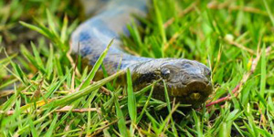
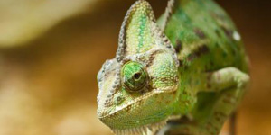

The African penguin (Spheniscus demersus), also known as the jackass penguin and black-footed penguin.

Anacondas are a group of large snakes of the genus Eunectes, known for their impressive size and aquatic habits.Armadillos are New World placental mammals in the order Cingulata with a leathery armour shell that provides protection.The lion (Panthera leo) is a species in the family Felidae and a member of the genus Panthera, often called the "king of the jungle".

Chameleons (family Chamaeleonidae) are known for their color-changing abilities and specialized, prehensile tails.